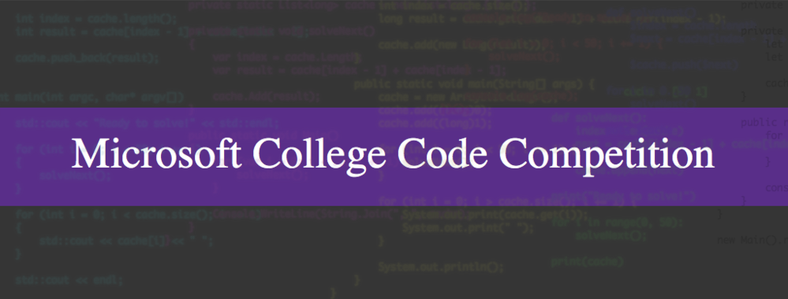
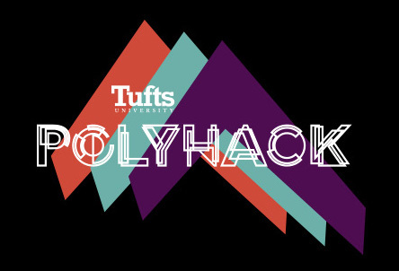
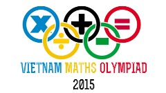
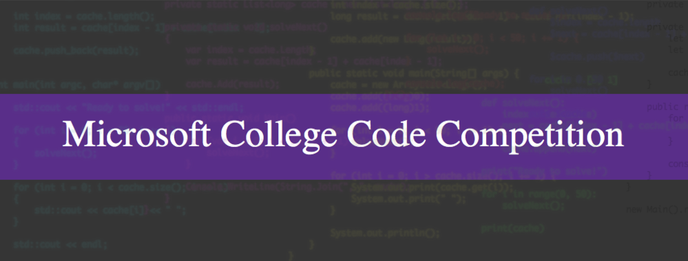
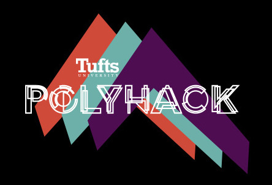
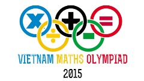

Education:
Tufts University

Computer Science and Mathematics, 2015 - 2019
GPA: 3.95
Hanoi University of Science - High School for Gifted Students

Mathematics, 2012 - 2015
GPA: 9.7 (Scale of 10)
Awards and Acknowledgements:
Microsoft College Code Competition, 2015

Runner-up
Tufts Polyhack, 2015

Top 10
Vietnam National Mathematics Olympiad, 2015

Second Prize

Runner-up
- Member of the runner-up team in Microsoft College Code Competition held at Tufts University. Competed against 11 teams of all class years.
Tufts Polyhack, 2015

Top 10
- Leader of an all-freshman team at Tufts University Polyhack 2015.
- Designed and implemented 2 games based on the Stroop Test and the Pacman Game in C++.
- Ranked in the top 10 out of 35 projects participating.
Vietnam National Mathematics Olympiad, 2015

Second Prize
- Ranked 4th in Vietnam National Mathematics Olympiad – The most prestigious mathematics competition in Vietnam.
Experience:
Tufts University Human - Robot Interaction Laboratory

Undergraduate Research Assistant, 2016 -
Tufts University Academic Resource Center
Discrete Mathematics On-Call Tutor, 2017 -
Hanoi University of Science High School for Gifted Students (HUS - HSGS)
Computer Science Olympiad Team Trainer, 2016
Undergraduate Research Assistant, 2016 -
- Implemented the Python version for the neural field model for real time speech perception project.
- Participated in discussions on how to improve the prediction accuracy of the model.
Tufts University Academic Resource Center
Discrete Mathematics On-Call Tutor, 2017 -
- Tutored students in discrete mathematics concepts and methods, such as graph theory, through individual tutoring and review sessions.
Hanoi University of Science High School for Gifted Students (HUS - HSGS)
Computer Science Olympiad Team Trainer, 2016
- Prepared the HUS HSGS Computer Science Olympiad Team, one of the best in Vietnam, for national and international competitions such as the International Olympiad in Informatics.
- Taught how mathematics concepts and theorems such as the Hall’s marriage theorem or the invariant principle can be applied in computer science.
Skills:
- Languages: C, C++, Python, Java, HTML5, JavaScript, Matlab
- OS: Linux, Windows, Mac, Android
- IDEs: Eclipse, Pycharm, Android Studio
- Softwares: Git, TensorFlow, SPSS
Projects:
Neural Field for Speech Recognition
Python program,
PickUp Sports
Android application,
Image Compressor and Decompressor
C program,
Scanned Document Black Edge Remover
C program,
Python program,
- Given the implementation of the neural field model in C++, re-implemented the model in Python using TensorFlow for better scalability. Doubled the maximum size of the sound data set processable by the model.
- Updated the Python version based on changes in the formalism as the research continued.
- The latest version identified spoken words with roughly 35% accuracy.
PickUp Sports
Android application,
- Designed the structure of an application that facilitates the organization of pick up sport games at Tufts University.
- Currently developing the front end components of the application.
- Used Java, written in Android Studio.
Image Compressor and Decompressor
C program,
- Used quantization of pixels and bit-level manipulations to transform each 2x2 pixel block into a 32-bit word.
- Reduced (on average) 66.7% in image size. Decompression restored (on average) 98.2% of the original image.
- Used C, written in Linux environment.
Scanned Document Black Edge Remover
C program,
- Used depth first search to identify and delete black edge pixels in scanned images of documents.
- Used C, written in Linux environment.